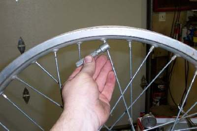
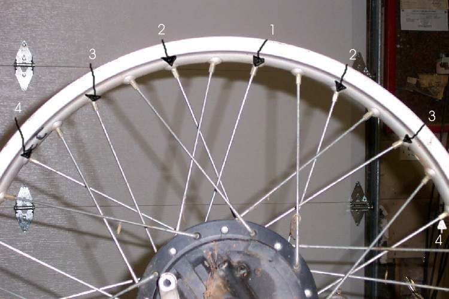

Truing means making the rim run round (no up-and-down wobble) and straight (no side-to-side wobble) and centred on the hub. It is done with small turns on many spokes. Quick, large turns bend the rim. Start with Check and tighten spokes and Check a wheel for runout. If the rim is bent or cracked, replace it.
Safety
- A wheel with several broken or loose spokes can fail suddenly. Do not ride it.
- Wear eye protection if you file spoke ends.
- Do not rush. Many small turns work, a few large turns do not.
You need
- A pointer or dial indicator fixed close to the rim. A stiff wire can serve as a pointer on a slow bike.
- The correct spoke wrench.
- The runout limit from your bike's manual. K-Light 125 limit: 2.0 mm for runout (see the spoke check page). Use your bike's own value.
Steps
- Remove the tyre and tube. Check each spoke for rust-seized nipples and add penetrating oil.
- Fit the wheel on its axle in a stand or in the bike. Set the pointer near the rim for round (up and down) or the side of the rim for true (sideways).
- Round. Spin the wheel and find the highest point. Call the spoke there number 1. Tighten it a little. Tighten the next four or five spokes on both sides a little less each: for example one turn, then three quarters, half and a quarter. Spin and repeat on the new high point.
- True. Set the pointer on the rim side. Find the spot that moves furthest to one side. Tighten the spoke at that point that runs to the opposite side of the hub, and the nearby spokes on that side, a little less each. This pulls the rim back toward the middle. Loosen the opposite spokes if needed.
- Go back and forth between round and true. Keep the rim centred between the fork legs or swingarm.
- If an adjustment makes things worse, stop. Do the opposite. If the wheel keeps going wrong, loosen all spokes evenly and start again.
- When the wheel is within the limit and still not tight, tighten all spokes about half a turn at a time until they ring crisply.
- File off any spoke end that sticks through the nipple. Fit rim tape before the tube goes in.
Check your work
- Runout and side play are within the manual limit.
- The rim is centred between the fork legs or the swingarm.
- The tapped spokes ring evenly.
If it did not fix the problem
- The rim is bent: Wheel is bent or buckled.
- Spoke or nipple is broken or seized: Replace broken spokes or relace a wheel.